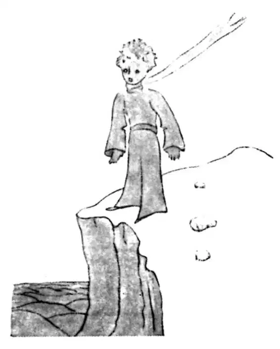

CHAPTER 3
第三章
—the narrator learns more about from where the little prince came
——叙述者对于小王子的来历有了更多的了解
It took me a long time to learn where he came from. The little prince, who asked me so many questions, never seemed to hear the ones I asked him. It was from words dropped by chance that, little by little, everything was revealed to me.
我花了很长时间才知道他从什么地方来。小王子问了我很多问题，但他似乎一直都没听到我的问话。他无意间的一些话，一点一点地越积越多，逐渐让我弄清楚了一切。
The first time he saw my airplane, for instance (I shall not draw my airplane; that would be much too complicated for me), he asked me:
比如说，第一次看到我的飞机时（我就不把我的飞机画出来了，那对我来说太复杂了），他便问我：
"What is that object?"
“那个东西是什么呀？”
"That is not an object. It flies. It is an airplane. It is my airplane."
“那并不是什么东西。它能飞。是一架飞机。是我的飞机。”
And I was proud to have him learn that I could fly.
我很骄傲地让他知道我会飞。
He cried out, then:
然后他大叫道：
"What! You dropped down from the sky?"
“什么！你从天上掉了下来啊？”
"Yes," I answered, modestly.
“是啊。”我谦虚地回答他。
"Oh! That is funny!"
“噢！那好可笑！”
And the little prince broke into a lovely peal of laughter, which irritated me very much. I like my misfortunes to be taken seriously.
接着小王子便天真可爱地大笑了一阵，让我非常地恼怒。我希望他能严肃地看待我的不幸。
Then he added:
然后他又说道：
"So you, too, come from the sky! Which is your planet?"
“那么，你也是从天上来的喽！你是哪个星球的呢？”
At that moment I caught a gleam of light in the impenetrable mystery of his presence; and I demanded, abruptly:
就在那一刻，对于他的出现这一难解之谜，我才略有所悟，就突然问他道：
"Do you come from another planet?"
“你是从另一个星球来的吗？”
But he did not reply. He tossed his head gently, without taking his eyes from my plane:
可他并没有回答我。他微微扬起头，眼睛一刻也没离开我的飞机，说道：
"It is true that on that you can't have come from very far away..."
“的确，就坐着那个东西，你不可能从很远很远的地方来……”
And he sank into a reverie, which lasted a long time. Then, taking my sheep out of his pocket, he buried himself in the contemplation of his treasure.
他沉思了良久。之后，便从他的口袋里掏出我画的那只羊，看着他的宝贝出了神。
You can imagine how my curiosity was aroused by this half-confidence about the "other planets." I made a great effort, therefore, to find out more on this subject.
你可以想象，对别的星球将信将疑就这样引起了我的好奇心。因此，我努力去探索更多关于这个话题的秘密。
"My little man, where do you come from? What is this 'where I live,' of which you speak? Where do you want to take your sheep?"
“我的小朋友，你从哪里来呢？你提到的‘我住的地方’是哪里呢？你想把你的羊带到哪里去啊？”
After a reflective silence he answered:
他一声不吭地想了一会，答道：
"The thing that is so good about the box you have given me is that at night he can use it as his house."
“你给我画的这只匣子有个好处就是，羊在晚上可以把它当成房子。”
"That is so. And if you are good I will give you a string, too, so that you can tie him during the day, and a post to tie him to."
“那是。如果你觉得可以的话，我还可以给你画一条绳子让你白天栓着他，画一根柱子让你把他拴在上面呢。”
But the little prince seemed shocked by this offer:
可是对于我的好意，小王子似乎很吃惊。

"Tie him! What a queer idea!"
“拴着他！多么奇怪的想法！”
"But if you don't tie him," I said, "he will wander off somewhere, and get lost."
我说：“可是如果你不把他拴着，他就会跑丢呀。”
My friend broke into another peal of laughter:
我的朋友又是一阵大笑。
"But where do you think he would go?"
“那你觉得他会跑到哪里去呢？”
"Anywhere. Straight ahead of him."
“任何地方。就在他的前面。”
Then the little prince said, earnestly:
然后小王子正儿八经地说：
"That doesn't matter. Where I live, everything is so small!"
“那有什么关系。我住的地方，所有东西都那么小！”
And, with perhaps a hint of sadness, he added:
他似乎带着一丝伤感，又接着说道：
"Straight ahead of him, nobody can go very far..."
“就在他前面，没人能走出很远……”